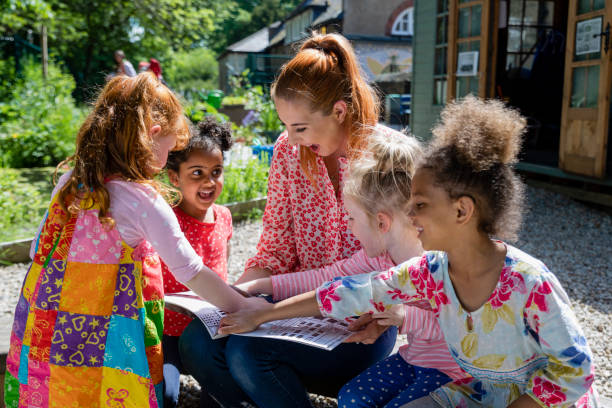

© Tunu Map — Satellite Images.
Original : Tunu
Native Language : Ewe
Establish : around 17th/18th Centuries
Geographical location: Anlo, Volta, Ghana, Africa.
Geographical coordinates: Latitude 5° 47' 50" north, and
Longitude 0° 43' 42" East.
Detailed map of Tunu and near Places:
(Google Local — map)
welcome to the Tunu google satellite map! This place is situated in Anlo District, Volta, Ghana, it's surrouded by towns- Bomigo to the north, Anyanui in the south, and its original name (with diacritics) is
TUNU.
See Tunu photos and images from satellite here, to explore the aerial photographs of Tunu in Ghana.
Tunu history and people documentation is available on the target page linked above.
credit:
mapcarta
Tunu is a locality in Keta, Ghanaian Coastal Plain. Tunu is situated nearby to the town Anyanui and the locality Bomigo.
It is resting on the banks of the water tributaries that come from the mighty River Volta, from AZIZANU. Tunu is between Geographical coordinates of;
Latitude
5.79712° or 5° 47' 50" north, and
Longitude
0.72845° or 0° 43' 42" east.
It's
Elevation is
-2 metres (-7 feet) compared to sea-level.
With Location Code =
6FQ2QPWH+R9
GeoNames = ID2294333
However, it's original name (with diacritics) is '
TUNU' with geographical location situated in Anlo, Volta, Ghana, Africa. Some of it's close neighbouring towns are; Bomigo, Anyanui, Dzita, Fuveme, Havui, and ... . Total distance from Anyanui is
4.3km
Some LANDMARKS OF TUNU are:
- The Chill
- Mangrove
- The M-SHAPE meandering water body that feeds KETA LAGOON
- Anyanui Market
- Marshy & Swampy land cover
See Tunu photos and images from google satellite images
here, and explore the aerial photographs of Tunu
(a name COINED BY LAKLE-Tay Eha and Prehku. Tunu details is available on the target page linked above.)


{kind=link}
{kind=link}
{kind=link}
{kind=link}